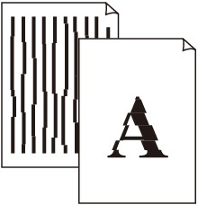

-
Check 1: Did you confirm the paper and print quality settings?
-
Check 2: Perform Print Head Alignment.
If the Print Head is misaligned in installing it, straight lines may be printed misaligned. Be sure to align the Print Head after you install it.
 Note
Note-
If the problem is not resolved after performing the Print Head Alignment, perform Print Head Alignment manually referring to Manual Print Head Alignment.
-